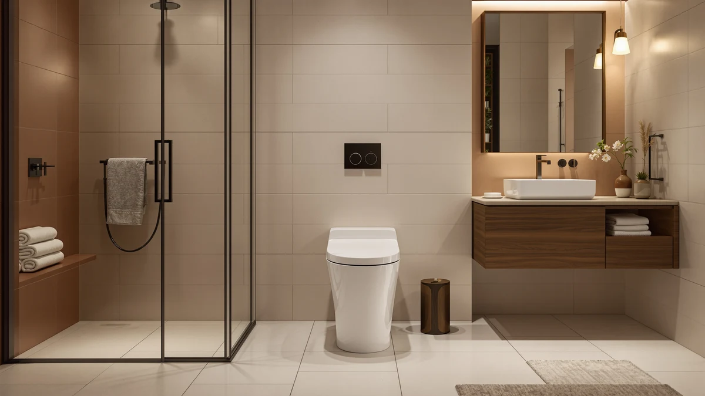

American Standard Compact Cadet Review (2026): Worth It?
Prices and picks verified as of November 2026. Independent, reader-supported reviews.


Quick Answer
The American Standard Compact Cadet is a compact one-piece toilet built for bathrooms that can't fit a standard footprint, and at $640.00 it costs less than the TOTO UltraMax and the Kohler Santa Rosa in this comparison while adding a slow-close seat standard. It earns the price if your bathroom needs that smaller footprint and a left-hand flush works for your plumbing; buyers who want bidet functions should look at the EPLO alternative below instead.
Our pick: American Standard 2403128.222 Compact Cadet, $640.00 Check Price on Amazon
Bottom line: our top pick is the American Standard 2403128.222 Compact Cadet 3 at $627.20.
Things to Know Before You Buy
- The Compact Cadet is a compact, elongated one-piece toilet with a left-hand trip lever, built for bathrooms where a standard-footprint toilet doesn't fit.
- At $640.00, it costs less than the Kohler Santa Rosa ($680.55) and the TOTO UltraMax ($672.78) in this comparison, though more than the EPLO smart bidet toilet ($599.99).
- American Standard includes a slow-close seat and lid standard, and the bowl carries the brand's EverClean surface treatment, which the company says resists stain and odor-causing bacteria buildup.
- It flushes at 1.28 gpf, below the federal 1.6 gpf maximum, which can mean lower water use over time, though American Standard doesn't publish a MaP flush-performance score for this ASIN.
- Amazon's listing doesn't show a public star rating or review count for this ASIN, so we can't cite one here, and a missing rating isn't the same as a zero rating.
This American Standard Compact Cadet review exists because the toilet keeps showing up in compact-bathroom searches without much independent coverage to confirm whether its small footprint and elongated seat are worth $640.00. We went through American Standard's published spec sheet, the current Amazon price and three other one-piece toilets in a similar price band to see how the Compact Cadet actually compares. This review is based on American Standard's published specifications, current Amazon pricing and the broader market for compact one-piece toilets in this price range.
The short version: the Compact Cadet is a strong pick if your bathroom has a tight footprint and you want a one-piece, elongated-seat toilet with a left-hand flush, without paying extra for bidet features. At $640.00, it undercuts the Kohler Santa Rosa and the TOTO UltraMax below while adding a slow-close seat neither of those alternatives includes standard. If you want built-in bidet functions, the EPLO alternative covers that ground for less money.
Why You Should Trust Us
Ilane Tall researches bathroom fixtures for Best One Piece Toilets, tracking manufacturer spec sheets, Amazon price movement and patterns across verified owner reviews for one-piece toilets like the Compact Cadet. This American Standard Compact Cadet review is built from American Standard's published specifications, current Amazon pricing and the feedback buyers leave on listing pages for this model and its closest competitors.
We do not run a testing lab. This research compares manufacturer data, pricing and owner feedback rather than personal use of the toilet. When American Standard doesn't publish a figure, such as a MaP flush score, or Amazon doesn't show a rating for this ASIN, we say so here instead of filling in a number we don't have.
Our Research Experience
This American Standard Compact Cadet review relies on research, not personal use of the toilet. We compared the Compact Cadet against the TOTO UltraMax, the EPLO smart bidet toilet and the Kohler Santa Rosa using each manufacturer's published spec sheet, the current Amazon price and the patterns in verified owner reviews on each listing. We focused on flush rating, seat type, bowl shape and price, the details compact-bathroom shoppers ask about most, and we excluded toilets without a public spec sheet or without enough verified reviews to establish a pattern.
This review states plainly if a figure such as a MaP flush score or star rating is missing, instead of guessing at a number American Standard hasn't published. That approach means some comparisons here lean on manufacturer specs alone rather than a head-to-head performance claim we can't support.
Overview & Specs

American Standard 2403128.222 Compact Cadet
What we like
- Compact elongated design fits bathrooms where a standard one-piece toilet doesn't
- Slow-close seat and lid come standard, unlike the Kohler Santa Rosa's base configuration
- EverClean surface treatment is designed to resist stain and odor-causing bacteria buildup
Flaws but not dealbreakers
- American Standard doesn't publish a MaP flush-performance score to confirm real-world flush strength at 1.28 gpf
- Amazon's listing doesn't show a public star rating or review count for this ASIN
- The left-hand trip lever won't suit every bathroom layout, so confirm which side you need before ordering
| Material | — |
| Size | Left Hand Trip Lever |
The American Standard 2403128.222 Compact Cadet 3 is a one-piece toilet built for bathrooms that can't fit a standard-footprint fixture. The elongated front seat follows the same compact-bowl geometry American Standard uses across its Compact Cadet line, and the toilet ships in Linen, a warmer off-white than a stark white bowl. Because the tank and bowl form a single ceramic shell, there's no seam at the base where two-piece models collect grime, the detail owners researching one-piece designs usually cite first.
On function, the Compact Cadet flushes at 1.28 gpf, below the federal 1.6 gpf ceiling, which can translate into measurable water savings over years of daily use. American Standard includes a slow-close seat and lid standard, a feature the Kohler Santa Rosa below doesn't list in its base configuration, and treats the bowl with its EverClean surface, which the company says inhibits the growth of stain and odor-causing bacteria between cleanings. The trip lever sits on the left side, so measure your existing rough-in and confirm lever placement works for your layout before ordering, since American Standard doesn't publish a bowl height figure or MaP score for this model.
What We Liked
The clearest strength of the Compact Cadet is its footprint. American Standard built it on a compact-bowl platform, so it fits bathrooms where a standard one-piece toilet runs into clearance issues, while still keeping the elongated seat shape most adults find more comfortable than a round-front bowl.
We also like that the slow-close seat and lid come standard rather than as a paid upgrade. That's a detail the Kohler Santa Rosa doesn't match in its base configuration, and it's the kind of small convenience that owners researching one-piece toilets consistently call out as worth having.
At $640.00, the Compact Cadet also undercuts both the TOTO UltraMax and the Kohler Santa Rosa in this comparison, which makes it one of the more affordable one-piece options here that still includes a slow-close seat and a water-efficient 1.28 gpf flush.
What Could Be Better
American Standard doesn't publish a MaP flush-performance score for the Compact Cadet, which makes it harder to confirm real-world flush strength against toilets that do list one. Shoppers who want a documented flush rating before buying won't find that confirmation here.
Amazon's listing also doesn't show a public star rating or review count for this ASIN, so we can't point to a review-based track record the way we can for some one-piece toilets in this price range. A missing rating isn't the same as a poor one, but it does mean less third-party confirmation.
The left-hand trip lever is a fixed design choice, not a flaw exactly, but it won't suit a bathroom plumbed for a right-hand or center flush, so confirm compatibility with your existing rough-in before ordering.
Who Is It For?
This American Standard Compact Cadet review points toward one clear buyer: someone renovating a small bathroom who needs a compact one-piece toilet without giving up the elongated seat shape most adults prefer. Its left-hand flush and slow-close seat suit buyers who've already confirmed those details fit their existing plumbing and want a seamless, easy-to-clean shell over a two-piece model's lower price.
It's a weaker fit for anyone who wants a documented flush-performance score before buying, since American Standard doesn't publish a MaP rating for this model, or anyone who needs bidet functions, since the EPLO alternative below covers that ground and this one doesn't.
Alternatives to Consider
If the Compact Cadet's footprint, flush rating or missing MaP score doesn't work for your bathroom, these three alternatives came up most often in our research into one-piece and smart-bidet toilets in a similar price range.

Also Great
TOTO® UltraMax® One-Piece Elongated 1.6
A one-piece elongated toilet with a Power Gravity 1.6 GPF flush and a SoftClose seat included, for buyers who want TOTO's engineering over American Standard's compact footprint.
$672.78
Check Price on Amazon
Best Value
EPLO Smart Toilet Bidet with
A smart bidet toilet with a booster-pump flush, foam-shield splash barrier, heated seat and foot-sensor controls, for buyers who want bidet functions the Compact Cadet doesn't offer, at $40 less.
$599.99
Check Price on Amazon
Premium Choice
Kohler 30811-96 Santa Rosa One-Piece
A compact elongated one-piece toilet with Comfort Height seating, priced $40.55 above the Compact Cadet and without a slow-close seat included standard.
$680.55
Check Price on AmazonFrequently Asked Questions
Is the American Standard Compact Cadet worth $640.00?
For buyers with a tight bathroom footprint who want a one-piece, elongated-seat toilet with a slow-close seat included standard, yes. It undercuts the TOTO UltraMax and the Kohler Santa Rosa in this comparison while matching their core one-piece construction. Shoppers who need a documented flush-performance score should note American Standard doesn't publish a MaP rating for this model.
How does the Compact Cadet's left-hand flush affect installation?
The trip lever sits on the left side of the tank, a fixed design choice rather than an adjustable one. Confirm your existing rough-in and plumbing layout support a left-hand flush before ordering, since switching sides isn't something you can do after the fact.
Does the Compact Cadet include bidet functions?
No. It's a standard one-piece toilet with a slow-close seat, not a smart or bidet model. Buyers who want built-in bidet functions should look at the EPLO smart toilet bidet in the alternatives above instead.
Final Verdict
This American Standard Compact Cadet review comes down to footprint and price. American Standard's compact one-piece toilet delivers an elongated seat, a standard slow-close lid and a water-efficient 1.28 gpf flush at $640.00, undercutting both the TOTO UltraMax and the Kohler Santa Rosa in this comparison, though without a published MaP flush score or a public star rating to confirm performance and track record. If your bathroom has a tight footprint and a left-hand flush works for your plumbing, the American Standard Compact Cadet is worth the purchase. Buyers who want bidet functions should look at the EPLO alternative above instead, and anyone who wants a documented flush rating should compare the TOTO UltraMax first.